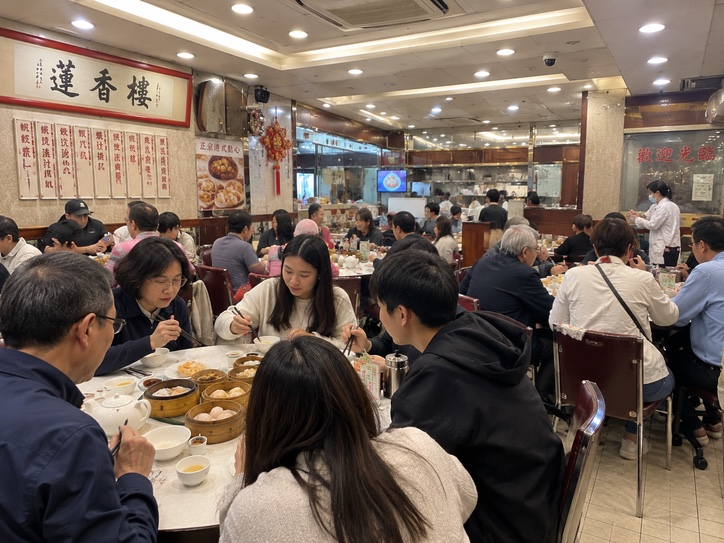

Sharing Tables: Hong Kong Food Court Etiquette
The first time a stranger sat down across from us mid-meal, we nearly choked. In Hong Kong, sharing tables (搭枱, daap toi) is normal at busy lunch spots and cha chaan tengs.
The unwritten rules
- Empty chair = you can sit. A small nod is polite. Asking isn't needed.
- Eat your food, mind your business. No small talk with strangers.
- Bag on your lap, not on the table or an empty chair.
- Finished? Leave. Lingering over an empty plate at lunchtime is the one thing that's rude.
- Return your tray at food courts.
The upside: watching what locals order is the best way to find new dishes.
